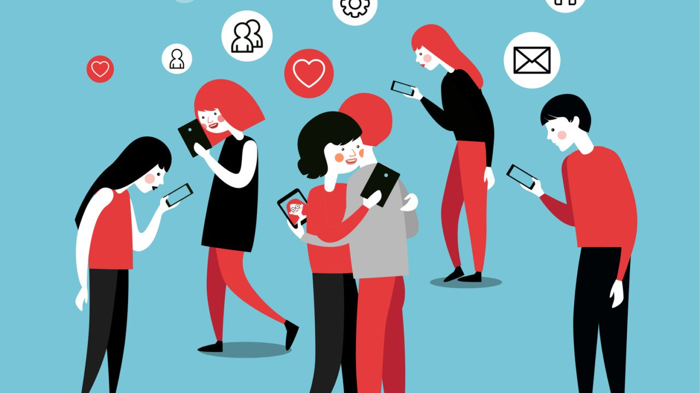

Smartphone Addiction

What is smartphone addiction?
Smartphone addiction is a real addiction where the users of smartphones become extremely dependent on them. While phone addiction is not a new issue, the creation of smartphone has been a major factor in the sudden spike of victims of smartphone addictions. Before the smartphone boom, phones were mainly used for texting and calling. There were softwares in the phones that allowed the users to surf on the internet, listen to music, take photos, but users rarely used them because the user experience of those softwares were not very good. For example, the user interfaces for these softwares such as the internet, music player, and camera was not very user friendly. Often times applications crashed, the loading time was too long, and the design of the programs were basic and terrible. They were just communication tools. Now, smartphones are not only viewed as communication tools but also navigation, computer, camera,and gaming consoles. Despite all the positive revolutionary effects that smartphones brought, it has created an enormous addiction problem. A survey from a non-profit organization called Common Sense Media says that approximately 66% of teenagers living in the United States use their phones excessively. According to the same survey, 46% of the American population believes they can't live without their smartphones.
Symptoms
Some of the symptoms of those who are addicted to their smartphones include spending excessive amount of time on their smartphones, feeling the need to constantly check their phones and use them in innapropriate social settings and situations such as during dinners and driving a vehicle. In addition, there are many mental and physical symptoms that smartphone addiction causes. For example, smartphone addiction can lead to the development of anxiety, depression, significant weight change, change in diet, change in sleep patterns, fatigue, inability to focus, low self-esteem, sore neck or headaches, and experiencing "phantom vibration syndrome," which means checking his or her phone when it hasn't vibrated.
Smartphone Addiction In The United States of America
The smartphones we know today, even though they seemed to have been around for a long time, are faily new. Although there were smartphones before the release of iPhone 3 in 2007, iPhone was truly the first mastered smartphone. It's design of the curved back was futuristic and its contents were outstanding compared to other phones of the time. For example, the AppStore was very user friendly in that it was easy to navigate and it was full of new applications for everything. According to comScore MobiLens, in December 2005, only 2% of the American population over the age of 13 owned smartphones. In December 2006, there was an increase in 1%, resulting in 3% of the American population owning smartphones. In December 2017, the year that the first iPhone was released, the percentage doubled to 6%. Starting from 2017, the percentage of smartphone users started growing a lot faster. In the month of December in the years 2008, 2009, 2010, 2011, 2012, 2013, 2014, 2015, 2016, the percentages were 11%, 17% 27%, 42%, 54%, 65%, 75%, 79%, and 81% respectively. With the exponetial increase in smartphone ownership, people became more and more dependent. According to a non-profit organization named Common Sense Media, 50% of teens felt they were addicted to their smartphones and 69% and 59% parents said their children were addicted to their smartphones. Even though there are many useful tools, smartphone brings so many distraction including ads, notifications from social media accounts, and constant updates. These factors cause the users the constantly check their smartphones. For example, according to Common Sense Media 69% of parents and 78% of teens check their devices at least hourly. To be speicific, according to Ms. Colier, a licensed clinical social worker, "most people now check their smartphones 150 times per day, or every six minutes." Our need to constantly check our phones frequently involuntarily shortens our attention span. This causes us to want faster immediate responses in other things, not just phone related. According to Common Sense Media, 72% of teenagers and parents feel the need to immediately respond to texts, social networking messages and other notifications.
Thoughts of Sherry Turkle
According to Sherry Turkle, a professor of social psychology at MIT who has been studying the effects of digital worlds on human behavior for almost thirty years, “we know how to connect” but we forgot how to talk to each other. With an extremely high smartphone addiction rate, it feels as if we are turning into digital robots. This raises questions such as “will future generations know how to converse with one another face to face? Will they notice the birds, trees, sunrises and the people with whom they share the planet?”.